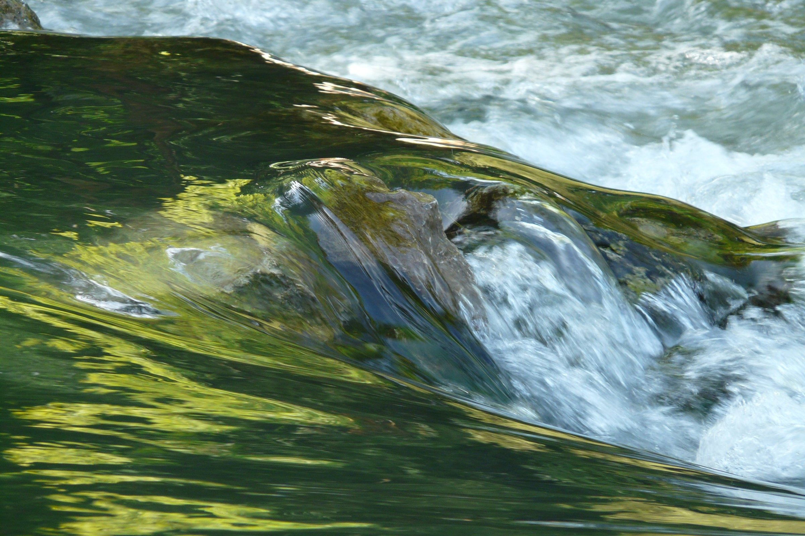

André Klaic
André Klaic
List of published articles
I do not intend to be a writer in the artistic sense. What I truly enjoy is the informational flow between the idea and the written words. Most of the texts available here were directly written aiming this interface. When they are not, I will include when and where I first wrote it, whether explicitly or implicitly.
14 lessons I learned from Eurípedes
The most valuable teachings I learned when I was an intern.

How I built this website
Not a tutorial. This is more a presentation of motivation and mental flow.